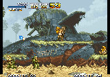
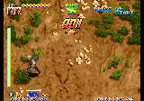
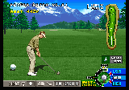

Compatibilidad de NEORecomp
Cómo se probó
Etapa 1, todas las ROMs: cada ROM corre en el intérprete (neoshot) con entradas guionadas (Start, botones,
flechas) y se toman capturas en los cuadros 1200, 2400, 3600; la miniatura es la más colorida. «Corre» significa que cargó,
el CPU no se detuvo y la captura no es de un solo color; no garantiza que el juego se vea bien: las miniaturas hay que revisarlas a ojo.
Etapa 2, una selección por programa: neorecomp sin traza (solo análisis estático),
compilar el proyecto generado y correr difftest con las semillas 1 y 2 (1800 cuadros,
entradas fijas más un mando aleatorio), que compara 68000, ciclos, RAM, VRAM, LSPC, paleta, latch y banco de P2, tarjeta, Z80 y su RAM, YM2610, mezcla y bus abierto tras cada función 68000; imagen y audio al final de cada cuadro contra el intérprete. Si algo cayó al intérprete en ROM, se recompila
con esas direcciones (--uncovered → --trace) y se repite. «Recompilado» = sin diferencias en todas las rondas.
«Ciclos recompilados» es el peor caso de las semillas de la última ronda (lo que falta suele ser código en RAM). La velocidad es la de
difftest --bench (1800 cuadros, recompilado / intérprete, sin ventana ni audio).
Para repetirlo: python3 tools/compat/run.py CARPETA y python3 tools/compat/report.py
(el motor es común a los tres recompiladores: tools/retrorecomp/compat.py).
Por programa
| Programa | ROMs | Soportado | Corren (etapa 1) | En blanco | Se cuelgan | No cargan | Recompiladas ok (etapa 2) |
|---|---|---|---|---|---|---|---|
| 2 MB | 3 | sí | 3 (100%) | 3 / 3 | |||
| P2 con bancos | 5 | sí | 5 (100%) | 5 / 5 |
Por juego
| Juego | Programa | P (KB) | Características | Estado | Código descubierto | Ciclos recompilados | Velocidad | Detalle | |
|---|---|---|---|---|---|---|---|---|---|
 | kof97 | P2 con bancos | 5120 | NGH 0232, 4 bancos de P2 | recompilado | 10.1% · 366 fn | 100.0% | 102× / 43× | |
| kof98 | P2 con bancos | 5120 | NGH 0242, 4 bancos de P2 | recompilado | 11.1% · 413 fn | 99.2% | 76× / 44× | ||
 | lastblad | P2 con bancos | 5120 | NGH 0234, 4 bancos de P2 | recompilado | 8.1% · 339 fn | 100.0% | 65× / 40× | |
 | mslug | 2 MB | 2048 | NGH 0201 | recompilado | 20.9% · 366 fn | 100.0% | 68× / 38× | |
 | mslug2 | P2 con bancos | 3072 | NGH 0241, 2 bancos de P2 | recompilado | 16.0% · 438 fn | 99.2% | 56× / 34× | |
 | samsho2 | 2 MB | 2048 | NGH 0063 | recompilado | 12.6% · 381 fn | 100.0% | 77× / 38× | |
 | shocktro | P2 con bancos | 5120 | NGH 0238, 4 bancos de P2, solo MVS | recompilado | 1.5% · 210 fn | 100.0% | 88× / 41× | |
 | turfmast | 2 MB | 2048 | NGH 0200 | recompilado | 7.0% · 172 fn | 99.4% | 49× / 32× |